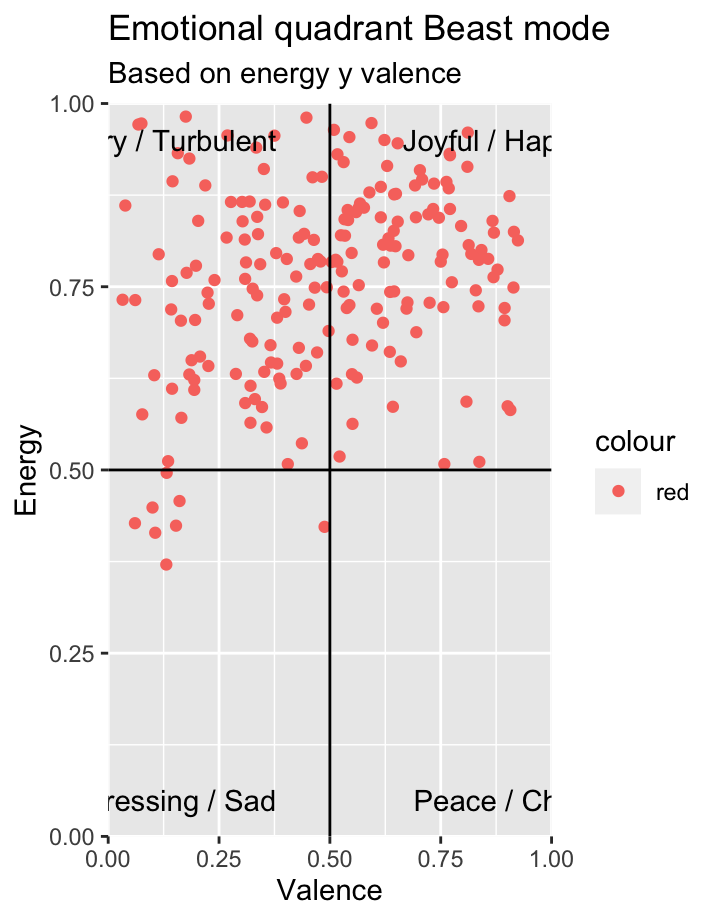
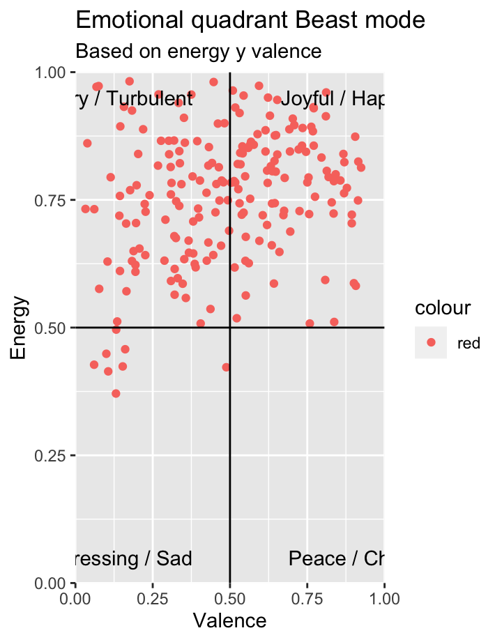

The Playlist
Get your Beast Mode on!
Beast mode refers to the aggressive, animalistic persona that one
might assume when in competition or combat in order to overpower an
opponent.
The corpus I chose for Computational Musicology is playlists labelled Workout. During covid, I often went to the gym to get out of the house. Furthermore, I always took my phone and Air Pods if I went to the gym. Music was an essential part of my gym workout. Moreover, I always listen to the label Workout on Spotify during my sessions. So, what does it mean to be a workout playlist? It interests me that it needs to give you energy because you are exercising, and you do not want to stop. It needs to help you focus on your movements. And you dont want to get bored or feel the pain from the exercise. And does all the workout music have lyrics to keep yourself motivated, or is this not necessary. One should consider the emotions, memories, and associations that different songs evoke. For some people, the extent to which they identify with the singers emotional state and viewpoint determines how motivated they feel
It can be hard to stay motivated during a workout, especially when
you have so many other things on your mind. However, exercise can help
distract you from your to-do lists and everyday anxieties, something we
all could use during the novel coronavirus age.
We know about the mental and physical benefits of exercise for the
brain, and that it aids with sleep, says Jordan Metzl, MD, a sports
medicine physician at Hospital for Special Surgery in New York City.
When people are ruminating about something, exercise helps.
If you are struggling to stay in the zone, you can do a couple of things
to amplify your sweat sesh. Lacing up a fresh pair of sneakers, for
starters. Or a crowd favorite: cranking the beats.
The right workout playlist can make a huge difference in how you feel
and perform during your workouts. Listening to high-tempo music (the
kind thats around 170 heartbeats per minute) made people perceive their
workouts as more effortless, even when they were challenging, and it
boosted cardiovascular benefits more than lower tempo tunes, according
to a recent study published in Frontiers in Psychology.
What is more: Music may change how you respond to fatigueand even boost
your endurance, per research published in the Journal of Sports Exercise
Psychology. Plus, other research from Sage Journal has shown that tunes
can make you feel more powerful and that people who listen to music they
deemed pleasing had higher levels of serotonin, also known as the
feel-good hormone, according to findings published in the book
Progress in Brain Research. Combine that with a workout, which already
amps up your endorphins, and you will really be treating your body right
(Jones & Jones, 2021).
But how does a workout playlist distinguish itself from other playlists? And what are the characteristics of a workout playlist? Check out the storyboard and find out!
Storyboard
Exploring the playlist: Understanding the Beast Mode playlist using Spotify audio features

When your mission is to create the perfect workout playlist, the first thing you want is to have songs you enjoy, of course. However, there are some other features you want your songs to have in your workout playlist. You want energising tracks that will keep you moving. You maybe want songs that have inspiring and motivational lyrics. And you should consider the beat; working out in time to the beat can help you get in your zone to make the most of your workout.
A few features jump out in the figure on the left.
The danceability of the playlist is around 0.74. A value of 0.0 is the
least danceable, and 1.0 is the most danceable. Danceability describes
how suitable a track is for dancing based on a combination of musical
elements, including tempo, rhythm stability, beat strength, and overall
regularity. You also want this in your workout playlist to keep the
tempo, energy in your workout
Energy is also high in the Beast mode playlist. Energy is a measure from 0.0 to 1.0 and represents a perceptual measure of intensity and activity. When doing your workout, you want to have the energy to finish all your exercises. Songs having high energy will help you achieve this.
The instrumentalness is very low in the Beast mode playlist. So Spotify predicts that the tracks do contain vocal content. And this is something you want in your playlist, lyrics for inspiring and motivation, but also lovely beats to keep your energy
The speechiness is mostly under 0.33, representing music and other non-speech-like tracks. This is an exciting insight into the corpus because inspiring and motivational lyrics could help you work out. People who listen to the Beast mode playlist prefer danceability and energy over inspiring and motivational lyrics.
The loudness of the playlist has an average of around -5. The overall
loudness of a track is in decibels (dB). Loudness values are averaged
across the entire track and help compare the relative loudness of
tracks. Loudness is the sound quality that is the primary psychological
correlate of physical strength (amplitude). Values typically range
between -60 and 0 db.
Because the range is between -60 and 0, -5 is relatively high. But why
does loudness help in your workout? The volume itself is not necessarily
a contributing factor toward the level of enjoyment. It is more that the
louder that music is, the quieter everything else seems in comparison.
One can literally drown out daily life, the daily grind, personal
emotional issues etc, all seem to periodically go away whilst
listening to loud music. It becomes a focus point; you can entirely
focus on your workout. There are no background noises that interrupt the
flow of your gym session.
If you want to know the meaning of all Spotify audio features, check out the tracks audio features: https://developer.spotify.com/documentation/web-api/reference/#/operations/get-audio-features
The Workout Feeling: Which emotions are conveyed by the songs in Beast Mode
In the figure Emotional quadrant Beast mode, you can see what feeling the Beast mode playlist gives. Do songs convey peace, joy, anger, and sadness? We can answer this question by looking at two measures Spotify has established: Valence and Energy.
Defined by Spotify, valence defines it as follows: A measure from 0.0 to 1.0 describing the musical positiveness conveyed by a track. Tracks with high valence sound more positive (e.g.happy, cheerful, euphoric), while tracks with low valence sound more negative (e.g.sad, depressed, angry). On the other hand, energy defines as follows: Energy is a measure from 0.0 to 1.0 and represents a perceptual measure of intensity and activity. Typically, energetic tracks feel fast, loud, and noisy. For example, death metal has high energy, while a Bach prelude scores low on the scale. Perceptual features contributing to this attribute include dynamic range, perceived loudness, timbre, onset rate, and general entropy.
You can create a quadrant with a scatter plot that reveals this information with these two measurements. The Beast mode playlist is high in energy, and valence has a nice distribution.
The Remix Effect: What is the difference in tempo between a normal version and and remixed version

Here you can see two tempograms, both of the songs Trust Nobody. Except one is the normal version of the track, and the other is the remixed version of the track. The remix version is in the Beast mode playlist; the normal version is not.
You can see that the songs beat is inconsistent until around 30 seconds in the song. After 30 seconds, a line is recognizable at around 150 BPM. The song starts slower, building up to the beat drop. This repeats after around 105 seconds. So it is clearly visible that the song has two slower parts, both around 30 seconds. This can be why the remixed version is in the Beast mode playlist, not the normal version.
In contrast to the normal version, the Valentino Khan version of Trust Nobody has a clear line almost the whole song at around 157 BPM. The BPM is even higher than the normal version. However, the biggest difference is missing the two slower parts in the remix version. The beat is the whole song very high. Furthermore, this can be why this song is in the Beast mode playlist. Earlier studies reported that listening to music with a fast tempo caused an increase in the heart rate (HR) and respiratory rate (Gomez & Danuser, 2007). And getting your heart to beat faster helps your body move oxygen and blood to your muscles (Blackburn, 2019), helping you in your workout!
Structure: Why is Do It To It the most popular song

On the left, the two self-similarity matrices show pitch- and timbre-based self-similarity within the song Do it to it by ACRAZE and Cherish. Do It To It is the most popular track in the Beast Mode playlist. However, can we understand the songs structure and conclude why it is the most popular song and a good workout song?
Both the chrome matrix and the timbre matrix have a checkerboard-like pattern. This is caused by an alternation between the introduction, the chorus, a bridge, the chorus again and the outro. There is no significant variation in the timbre matrix; this could be because it is instrumental, almost the same for the whole song. The timbre and chroma matrices also show that the song is pretty balanced. You can even see a little build-up in the first chorus just before the bridge, starting at around 65 seconds until 75 seconds when the bridge starts.
Take it to a higher tempo What are the components of the 20 highest tempo songs in the playlis
The dendrogram and the heatmap on the left visualize the hierarchical
clusterings and feature values of the twenty highest tempo songs in the
Beast Mode playlist. This dendrogram uses Euclidean distance and single
linkage.
One fascinating insight is that the tempo feature is not (almost) the
same colour in every song. In contrast, these songs are the 20 highest
tempo songs in the Beast Mode playlist, which has 200 songs.
There is also one clear outlier; this is Hypnocurrency. This song has
a higher duration than most other songs. And has the highest tempo and
instrumentalness. But because it is longer and the build-up is longer,
it actually feels relatively slow.
Certain features are too general to conclude, but we can see some
similarities between songs. For example, MONTERO and GUCCI FENDI are
high in acousticness and valence. And Up is high in danceability and
lower in energy. At the same time, Trust nobody is lower in danceability
and higher in energy.
Conclusion
Column 1
Findings and contribution
While making this portfolio, I realised there is more behind songs than I ever realised. Many features make a song in a specific genre or class, but they do not say everything.
The expected features for a workout playlist were in most of the songs in the Beast Mode playlist. You want to have songs with high energy because these songs can change your response to fatigue and even boost your endurance. You want tracks with a high tempo that bring your workouts to the next level. Your heart rate adjusts to the beat of the music. So take this into account when you are starting your session. Are you going for a run, or are you doing strength work? Another essential feature is loudness. Loudness can help you forget the pain and let you focus on the exercises. It also helps you forget other things like emotional issues, the daily grind and other distractions.
Motivational lyrics can help you in your workout. Doing your workout and listening to music is a solo activity, so having an artist sing to you along the way can be reassuring. It can help you focus and your movements. But lyric was something that was missing in the Beast Mode playlist.
So if your a making your own workout playlist, hold into account what
kind of workout you are going to do. Try to use tracks with a tempo that
matches the correct heart rate for your exercises. Gyms, for example,
should have tracks with a tempo between 120 and 140 BPM for strength
works.
Another thing you should consider is the loudness; you want to focus on
your exercise. Forget that you have a rough day. This really can elevate
your mod and spike your performance.
Also, choose songs that you like. This sounds like an obvious choice,
but this can really help you in your workout. It also helps make the
workout less monotonous.
And finally, keep some other workout playlists as a backup. Its normal to dread a workout. Instead of forcing yourself through one playlist, build reserve playlists to match a lower energy level so you dont feel struggling to keep up.
Column 2
Reference list
Blackburn, K. B. (2019, May 8). How to get your heart rate up. MD Anderson Cancer Center. Retrieved April 3, 2022, from https://www.mdanderson.org/publications/focused-on-health/how-to-get-your-hear-rate-up.h23Z1592202.html
Buentello, S. (2021, December 28). Explore your activity on Spotify with R and spotifyr: How to analyze and visualize your streaming history and music tastes. Medium. Retrieved April 3, 2022, from [https://towardsdatascience.com/explore-your-activity-on-spotify-with-r-and-spotifyr-how-to-analyze-and-visualize-your-stream-dee41cb63526\\](https://towardsdatascience.com/explore-your-activity-on-spotify-with-r-and-spotifyr-how-to-analyze-and-visualize-your-stream-dee41cb63526){.uri}
Gomez, P., & Danuser, B. (2007). Relationships between musical structure and psychophysiological measures of emotion. Emotion, 7(2), 377387. https://doi.org/10.1037/1528-3542.7.2.377
Jones, A., & Jones, A. (2021, November 2). Umm, This May Be The Greatest Workout Playlist Of All Time. Womens Health. Retrieved April 3, 2022, from https://www.womenshealthmag.com/fitness/a27511573/best-workout-songs-playlist/
Pavlik, K. (2020, January 3). Classifying genres in R using Spotify data. Kaylin Pavlik. Retrieved April 3, 2022, from https://www.kaylinpavlik.com/classifying-songs-genres/
S., & K. (2019, November 17). How to Combine Multiple GGPlots into a Figure. Datanovia. Retrieved April 3, 2022, from https://www.datanovia.com/en/lessons/combine-multiple-ggplots-into-a-figure/
Web API Reference | Spotify for Developers. (n.d.). Spotify. Retrieved April 3, 2022, from https://developer.spotify.com/documentation/web-api/reference/#/operations/get-audio-features